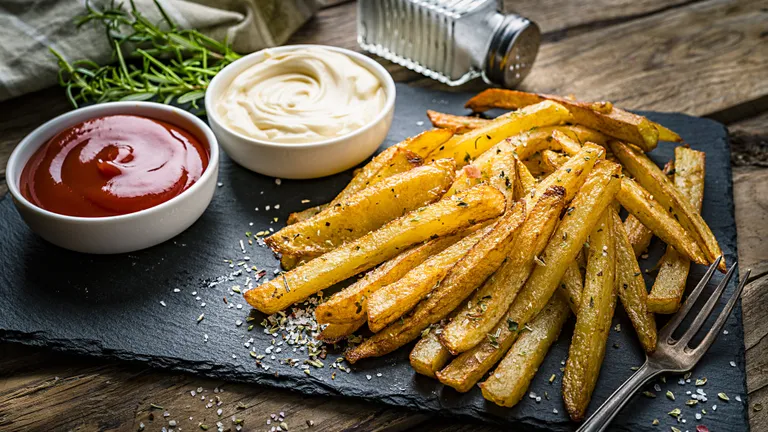

Chips

Description
Chips are a delicious and satisfying side dish that complements a huge number of main meals. From a homemade burger or some battered fish to lasagne and chicken Keiv, the combinations are endless. With just two ingredients you can make chips which are much tastier and satisfying compared to the frozen bags you can buy from a supermarket.
It's cool to season with flaky sea salt but you can use herbs and spices or even a drizzle of truffle oil if you’re feeling fancy.
Ingredients
- 750 g potatoes (for example Maris Piper)
- 2 tbsp vegetable oil
- seasoning (optional, for example: salt, pepper and finely chopped rosemary)
Steps
- Wash and slice your potatoes. You can peel your potatoes if you want or leave the skin on for a more rustic feel.
- Heat your oven to 200C (180C fan, Gas 6).
- Par-boil your potatoes in salted boiling water for around 5-10 mins until just soft. Drain in a colander and allow to steam dry for a minute or two.
- Toss the chips in vegetable oil, making sure they're all covered. Spread into an even layer on a baking tray and cook for 20 - 25 minutes until golden brown and crispy. Turn the chips a couple of times during cooking.
- Sprinkle the chips with salt or herbs (we love rosemary) and serve hot.